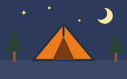
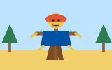
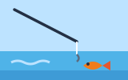
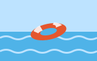
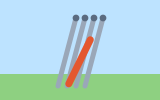
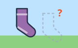
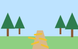
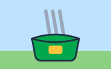

01The Journey · ការធ្វើដំណើរpack
One Friday night, our instructors told us to pack our bags for adventure camp.
នៅយប់ថ្ងៃសុក្រមួយ គ្រូរបស់យើងបានប្រាប់យើងឱ្យខ្ចប់កាបូបសម្រាប់ជំរុំផ្សងព្រេង។
ដំណើរកម្សាន្តបោះតង់លើកដំបូង · Power Up Level 6 · Unit 5 · Pages 60-61
This is a scary story, but a safe one: the children feel afraid in the dark, they stay calm, and they laugh at the end. Feeling scared is normal. What matters is what you do.

tentដេកនៅខាងក្រៅ
scarecrowទីងមោងក្នុងព្រៃ
fishingរៀនស្ទូចត្រីOne trip, in order: the journey, a scary night by the fire, and a funny ending the next morning.
Space listen · ← → move · K show text
One Friday night, our instructors told us to pack our bags for adventure camp.
នៅយប់ថ្ងៃសុក្រមួយ គ្រូរបស់យើងបានប្រាប់យើងឱ្យខ្ចប់កាបូបសម្រាប់ជំរុំផ្សងព្រេង។

I was excited to explore and learn to fish, but Sophie wanted to go swimming.
ខ្ញុំរំភើបចង់ដើររុករក និងរៀនស្ទូចត្រី ប៉ុន្តែ Sophie ចង់ទៅហែលទឹក។
The bus was late, and when we arrived, it was pitch black.
ឡានក្រុងមកយឺត ហើយនៅពេលយើងមកដល់ វាងងឹតឈឹង។
The campsite was completely empty, and I felt quite anxious.
ទីតាំងបោះតង់ទទេទាំងស្រុង ហើយខ្ញុំមានអារម្មណ៍ព្រួយបារម្ភខ្លាំង។

Joe asked me to pass him the tent poles, but we could not find them.
Joe បានសុំឱ្យខ្ញុំហុចបង្គោលតង់ឱ្យគាត់ ប៉ុន្តែយើងរកវាមិនឃើញទេ។
Joe stayed calm, and that night we slept under the stars.
Joe នៅស្ងប់ស្ងាត់ ហើយយប់នោះយើងដេកនៅក្រោមផ្កាយ។
We made a campfire, toasted marshmallows, and Joe told us a story.
យើងបានបង្កើតភ្លើងជំរុំ អាំងម៉ាស្ម៉ាឡូ ហើយ Joe បាននិទានរឿងឱ្យយើងស្ដាប់។

In his story, socks and trousers kept disappearing from the tents.
នៅក្នុងរឿងរបស់គាត់ ស្រោមជើង និងខោវែងតែងតែបាត់ពីក្នុងតង់។
The next morning, I persuaded Sophie to go on the fishing course.
ព្រឹកបន្ទាប់ ខ្ញុំបានបញ្ចុះបញ្ចូល Sophie ឱ្យទៅរៀនស្ទូចត្រី។

In the forest, we saw more and more straw along the path.
នៅក្នុងព្រៃ យើងឃើញចំបើងកាន់តែច្រើននៅតាមផ្លូវ។

Sophie heard a noise, shouted 'Run!', and raced back with the bag of tent poles.
Sophie បានឮសម្លេងមួយ បានស្រែកថា «រត់!» ហើយរត់ត្រឡប់មកវិញជាមួយកាបូបដែលមានបង្គោលតង់។
Sophie laughed: 'Scarecrows don't need tent poles!'
Sophie សើចហើយនិយាយថា «ទីងមោងមិនត្រូវការបង្គោលតង់ទេ!»
The two questions from page 61, answered.
It is a scary story. It feels real, but the scarecrow part is a story inside the story.
វាជារឿងគួរឱ្យខ្លាច។ វាហាក់ដូចជាពិត ប៉ុន្តែផ្នែកទីងមោងគឺជារឿងនៅក្នុងរឿង។
Joe tells the scarecrow tale by the fire. The camping trip is the outside story.
Nobody tells us. The poles were in a bag in the forest, and Sophie jokes that a scarecrow does not need them.
គ្មាននរណាប្រាប់យើងទេ។ បង្គោលតង់នៅក្នុងកាបូបមួយក្នុងព្រៃ ហើយ Sophie និយាយលេងថា ទីងមោងមិនត្រូវការវាទេ។
That is why the ending is funny: the mystery is never really solved.
Answer in your head, then tap Listen to compare.
I felt quite anxious, because I had never been out so late at night.
ខ្ញុំព្រួយបារម្ភខ្លាំង ព្រោះខ្ញុំមិនដែលចេញក្រៅយប់ជ្រៅបែបនេះពីមុនមកទេ។
We toasted marshmallows and listened to Joe's scary story.
យើងអាំងម៉ាស្ម៉ាឡូ និងស្ដាប់រឿងគួរឱ្យខ្លាចរបស់ Joe។
She heard a noise in the trees near the bag.
នាងបានឮសម្លេងនៅក្នុងដើមឈើនៅជិតកាបូបនោះ។
From the page's life skill: dealing with fear.
Tap a word's play button to hear it. Hide one side, then recall it before you tap to check.
One Friday night, our instructors told us to pack our bags for adventure camp. I was excited to explore and learn to fish, but Sophie wanted to go swimming. The bus was late, and when we arrived, it was pitch black. The campsite was completely empty, and I felt quite anxious.
នៅយប់ថ្ងៃសុក្រមួយ គ្រូរបស់យើងបានប្រាប់យើងឱ្យខ្ចប់កាបូបសម្រាប់ជំរុំផ្សងព្រេង។ ខ្ញុំរំភើបចង់ដើររុករក និងរៀនស្ទូចត្រី ប៉ុន្តែ Sophie ចង់ទៅហែលទឹក។ ឡានក្រុងមកយឺត ហើយនៅពេលយើងមកដល់ វាងងឹតឈឹង។ ទីតាំងបោះតង់ទទេទាំងស្រុង ហើយខ្ញុំមានអារម្មណ៍ព្រួយបារម្ភខ្លាំង។
Joe asked me to pass him the tent poles, but we could not find them. Joe stayed calm, and that night we slept under the stars. We made a campfire, toasted marshmallows, and Joe told us a story. In his story, socks and trousers kept disappearing from the tents.
Joe បានសុំឱ្យខ្ញុំហុចបង្គោលតង់ឱ្យគាត់ ប៉ុន្តែយើងរកវាមិនឃើញទេ។ Joe នៅស្ងប់ស្ងាត់ ហើយយប់នោះយើងដេកនៅក្រោមផ្កាយ។ យើងបានបង្កើតភ្លើងជំរុំ អាំងម៉ាស្ម៉ាឡូ ហើយ Joe បាននិទានរឿងឱ្យយើងស្ដាប់។ នៅក្នុងរឿងរបស់គាត់ ស្រោមជើង និងខោវែងតែងតែបាត់ពីក្នុងតង់។
The next morning, I persuaded Sophie to go on the fishing course. In the forest, we saw more and more straw along the path. Sophie heard a noise, shouted 'Run!', and raced back with the bag of tent poles. Sophie laughed: 'Scarecrows don't need tent poles!'
ព្រឹកបន្ទាប់ ខ្ញុំបានបញ្ចុះបញ្ចូល Sophie ឱ្យទៅរៀនស្ទូចត្រី។ នៅក្នុងព្រៃ យើងឃើញចំបើងកាន់តែច្រើននៅតាមផ្លូវ។ Sophie បានឮសម្លេងមួយ បានស្រែកថា «រត់!» ហើយរត់ត្រឡប់មកវិញជាមួយកាបូបដែលមានបង្គោលតង់។ Sophie សើចហើយនិយាយថា «ទីងមោងមិនត្រូវការបង្គោលតង់ទេ!»
Q. What type of story is this?
Q. តើនេះជារឿងប្រភេទអ្វី?
A. It is a scary story. It feels real, but the scarecrow part is a story inside the story.
A. វាជារឿងគួរឱ្យខ្លាច។ វាហាក់ដូចជាពិត ប៉ុន្តែផ្នែកទីងមោងគឺជារឿងនៅក្នុងរឿង។
Q. Who took the tent poles?
Q. តើនរណាយកបង្គោលតង់ទៅ?
A. Nobody tells us. The poles were in a bag in the forest, and Sophie jokes that a scarecrow does not need them.
A. គ្មាននរណាប្រាប់យើងទេ។ បង្គោលតង់នៅក្នុងកាបូបមួយក្នុងព្រៃ ហើយ Sophie និយាយលេងថា ទីងមោងមិនត្រូវការវាទេ។
Q. How did the narrator feel at the campsite?
Q. តើអ្នកនិទានរឿងមានអារម្មណ៍យ៉ាងណានៅទីតាំងបោះតង់?
A. I felt quite anxious, because I had never been out so late at night.
A. ខ្ញុំព្រួយបារម្ភខ្លាំង ព្រោះខ្ញុំមិនដែលចេញក្រៅយប់ជ្រៅបែបនេះពីមុនមកទេ។
Q. What did you do by the campfire?
Q. តើអ្នកបានធ្វើអ្វីនៅក្បែរភ្លើងជំរុំ?
A. We toasted marshmallows and listened to Joe's scary story.
A. យើងអាំងម៉ាស្ម៉ាឡូ និងស្ដាប់រឿងគួរឱ្យខ្លាចរបស់ Joe។
Q. Why did Sophie shout 'Run!'?
Q. ហេតុអ្វីបានជា Sophie ស្រែកថា «រត់!»?
A. She heard a noise in the trees near the bag.
A. នាងបានឮសម្លេងនៅក្នុងដើមឈើនៅជិតកាបូបនោះ។
I feel scared, but I can breathe and stay calm.
ខ្ញុំខ្លាច ប៉ុន្តែខ្ញុំអាចដកដង្ហើម និងនៅស្ងប់ស្ងាត់បាន។
Can we turn on a light, please?
សូមបើកភ្លើងបានទេ?
Say it in your head first, then tap the box to check.